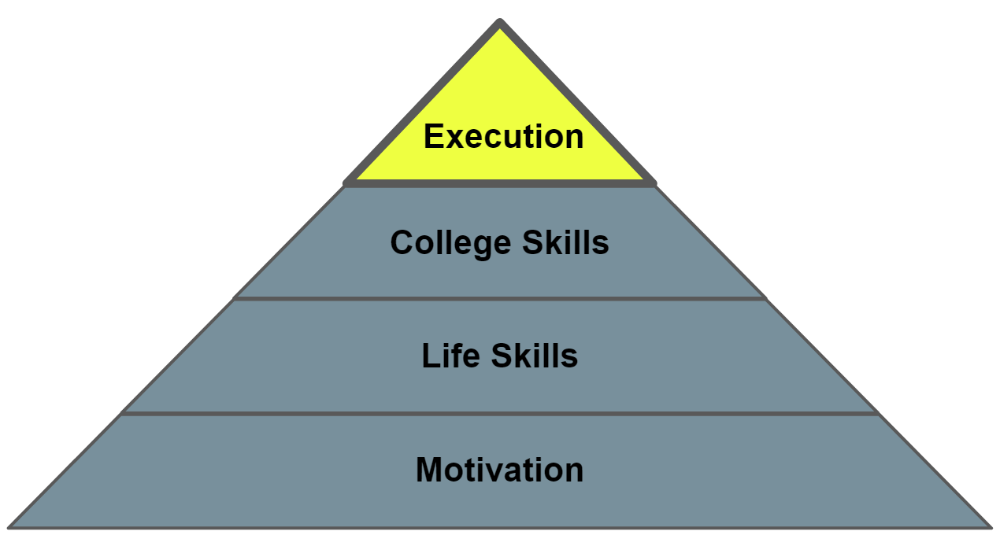

This book is for informational purposes only. Except when an external source is cited, everything in the book is the author’s opinion. The author makes no guarantee about the correctness or accuracy of any content in this book. Furthermore, you may disagree with and/or find certain content offensive.
Read at your own risk. Do not continue reading if you do not accept full responsibility for all actions you take as a result of reading this book. The author is not liable for any damages including, but not limited to, academic failures, career path mistakes, financial loss, feeling upset, and physical/mental injury.
Congratulations on making it to Part IV!
So far, we’ve primarily discussed theory. In Part I, I gave you the motivation for pursuing the computer science major: the three dimensions of jobs and how a career in software helps you achieve them. In Part II, I discussed important day-to-day fundamentals: goal-setting, interacting with other people, and dealing with failure. In Part III, I gave an overview of the primary dimensions of college: academics, physical health, mental health, finances, and internships. You could understand everything without even stepping foot in college.
It’s time to get practical in Part IV. In Part III, I pointed out all the stepping stones towards your ultimate goal of getting your computer science degree and highly-coveted software job. I explained the importance of planning out your courses, choosing good professors, ditching your negativity, getting out there to socialize, sleeping well, exercising well, eating well, avoiding penny-pinching your way through college, ensuring you get adequate internship experience, and a plethora of other important action items. In the final part of the book, I’m going to connect the stepping stones together.

I’ll provide a template of things you should do, starting with your pre-college years and then work all the way through senior year of college. The final part of this book illustrates what successful execution looks like.
Even if you’re part way through college, I still recommend reading all the chapters in part IV. For example, if you’re already a sophomore in college, you may still find the chapters discussing pre-college and freshman year helpful. You may have missed some important tasks or big-picture ideas. Your years in school are all interconnected and part IV presents a cohesive push towards getting your degree in computer science and your software job.